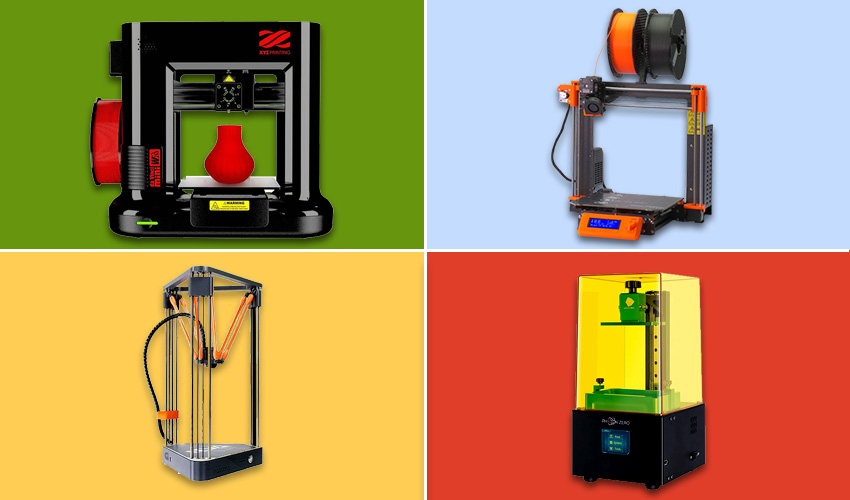

 La innovación constante, una rápida respuesta al mercado y la reducción de costos, son ejes fundamentales para cualquier empresa/proyecto. La tecnología de manufactura aditiva es ideal para lograr estos objetivos y se puede implementar en varios pasos del proceso productivo. Nuestra Factory es una oportunidad de contar con un aliado estratégico para desarrollar rápidamente soluciones a medida y económicas gracias a nuestra experiencia usando la impresión 3D en varias industrias. Nuestro equipo técnico te puede guiar con modificaciones de diseño, materiales y configuración que maximizan las probabilidades de éxito de la pieza final y así ayudarte a llevar una idea de la primera prueba a una producción importante... Estamos a disposición, contamos tu proyecto y lo que necesitás realizar.